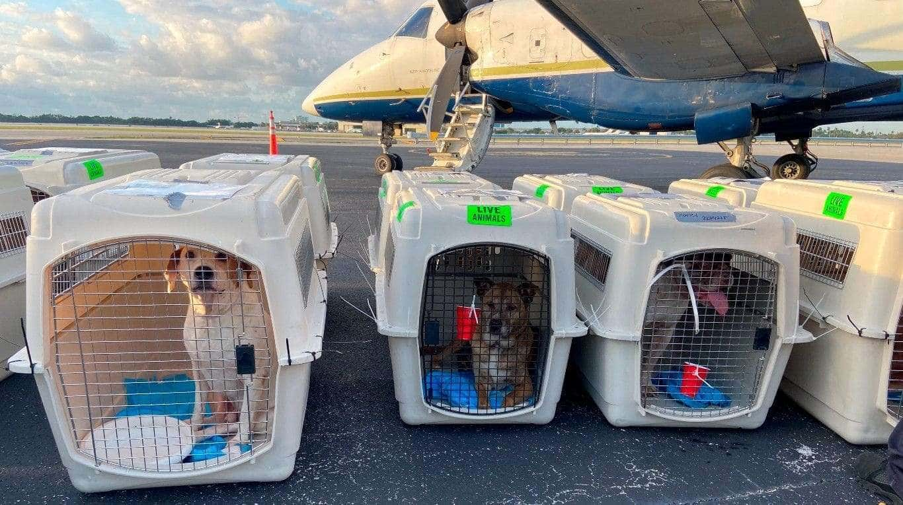

NOSOTRAS
Nuestra misión es ofrecer la máxima calidad profesional en el cuidado de la salud de tus mascotas, acompañándolos de la mejor manera en cada etapa de sus vidas. Desde 1997 nuestra veterinaria brinda la mejor atención para tu mascota, incorporando profesionales veterinarios calificados, quienes continúan en capacitación y formación constante, en pos de brindar mayor calidad del servicio a tu mascota. Así también, queremos dejarlos lo más coquetos posibles. Brindamos los siguientes servicios:
- Atención clínica
- Estudios
- Cirugías generales
- Peluquería canina
CONTACTO
Nos podés encontrar de Lunes a Sábados en Av. Gaona 2009, Ramos Mejía, Buenos Aires. Atendemos por orden de llegada, excepto estudios o cirugías programadas.
Para más información sobre los servicios brindados, nuestro teléfono de contacto es: 011-15-4949-9584. Te esperamos!!
NUESTROS HORARIOS
| Día | Mañana | Tarde | |
|---|---|---|---|
| 1 | Lunes | X | 15 a 17 hs |
| 2 | Martes | 9.30 a 12.30 hs | 16.30 a 18.30 hs |
| 3 | Miércoles | X | 15 a 18 hs |
| 4 | Jueves | 9.30 a 14 hs | X |
| 5 | Viernes | X | X |
| 6 | Sábado | 9.30 a 12.30 hs | 9.30 a 13 a 17 hs |

BLOG MASCOTERO
- Pequeña gatita y gran perro son mejores amigos:
- Caso Coco: ¿cuáles son los requisitos para ingresar perros y gatos al país? Más info
- Mascotas: ¿hay que abrigar a perros y a gatos? Más info